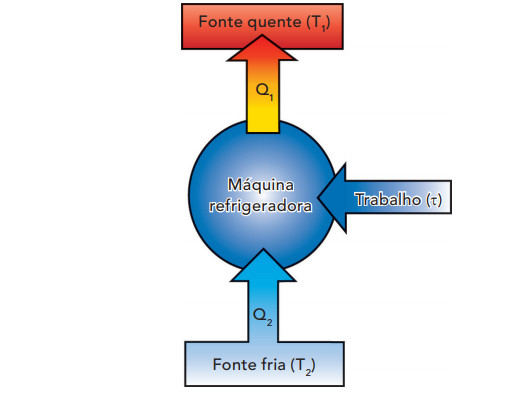

A Segunda Lei da Termodinâmica trata da transferência de energia térmica. Isso quer dizer que ela indica as trocas de calor que têm tendência para igualar temperaturas diferentes (equilíbrio térmico), o que acontece de forma espontânea. O calor vai ser transferido de forma espontânea, onde será de um corpo com maior temperatura para o de menor. Foi a partir dos estudos do físico francês Sadi Carnot (1796-1832). Incentivado no tempo da revolução industrial pela possibilidade de aumentar a eficiência das máquinas. Ao analisar os modos de funcionamento das máquinas térmicas, Carnot descobriu que elas eram mais eficientes quando havia transferência de calor da temperatura mais alta para a temperatura mais baixa. O ciclo, ao ser completado no sentido horário, produz um trabalho positivo e, quando é percorrido no sentido anti-horário, o trabalho é negativo. Carnot demonstrou que as quantidades de calor trocadas são proporcionais às próprias temperaturas das fontes
-Dentre as duas leis da termodinâmica, a segunda é a que tem maior aplicação na construção de máquinas e utilização na indústria, pois trata diretamente do rendimento das máquinas térmicas.
Máquinas refrigeradoras: Existem dispositivos que, durante o seu funcionamento, transformam o trabalho em calor. Essas máquinas fazem a transferência de calor de onde há menor temperatura para onde há maior temperatura. É importante lembrar que esse processo não acontece de forma espontânea. A geladeira por exemplo, as primeiras eram, simplesmente, móveis de madeira que funcionavam como isolantes térmicos, nos quais eram colocadas pedras de gelo. O motor de uma geladeira retira calor do congelador (fonte fria) para o ambiente externo (fonte quente) e, para isso, gasta trabalho, que é produzido pelo compressor. Quando calculamos a eficiência de uma máquina refrigeradora, é necessário dividir a quantidade de calor retirado da fonte fria pelo trabalho externo.
